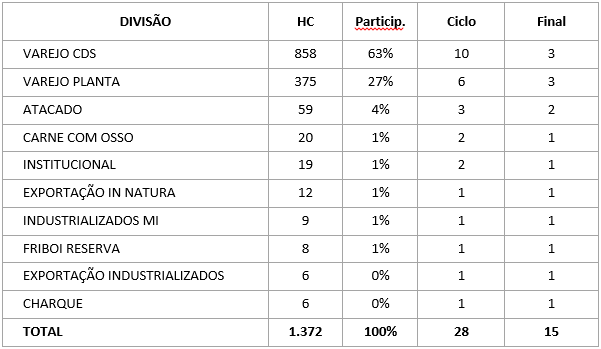
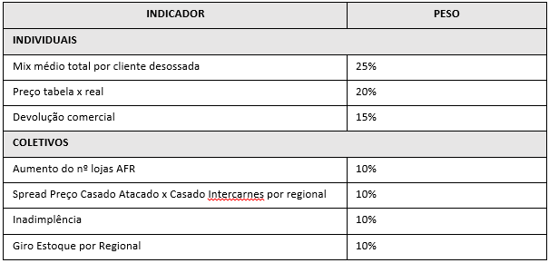

REGULAMENTO
Campanha de Incentivo
“ROTA DO SUCESSO JBS”
JBS S.A.
Avenida Marginal Direita do Tietê, nº 500
Vila Jaguará - São Paulo – SP
CNPJ nº 02.916.265/0027-07
Período de participação: 01 de fevereiro de 2015 a 30 de Junho de 2015.
1. DA CAMPANHA
1.1 A Campanha de Incentivo “Rota do Sucesso JBS” (“Campanha”) será promovida pela JBS S.A. (Realizadora), constituindo-se em um Ato Unilateral de Vontade, conforme o disposto nos artigos 854 e seguintes do Código Civil.
1.2 A Campanha será realizada em todo o território nacional, no período de 01 de fevereiro de 2015 a 30 de Junho de 2015, conforme as regras descritas neste Regulamento.
1.3 Esta Campanha é direcionada exclusivamente aos colaboradores próprios que ocupam os cargos de vendedores, coordenadores e gerentes da área comercial da Divisão de Carnes da Realizadora, separadas nas seguintes Divisões:
• Atacado;
• Atacado Carne com Osso;
• Charque;
• Exportação In Natura;
• Exportação Industrializados;
• Industrializados MI;
• Friboi Reserva;
• Institucional;
• Varejo CDs;
• Varejo Planta.
1.4 Esta Campanha tem como objetivo incentivar e motivar as equipes de vendas, visando o incremento de produtividade e aumento de vendas dos produtos da Realizadora.
1.5 Para participação efetiva nesta Campanha, será necessário que cada participante esteja cadastrado no hotsite da campanha, www.rotadosucessojbs.com.br.
1.6 A presente Campanha contará com 2 (duas) premiações:
A cada ciclo de participação;
Ao final da Campanha.
2. DOS PERÍODOS E MEDIÇÃO DE DESEMPENHO
2.1 A medição das metas individuais de vendas será feita mensalmente, durante o período de realização desta Campanha.
2.2 Todos os desempenhos serão medidos dentro da divisão respectiva, através do levantamento do realizado, medido em “Milhas”. O valor máximo mensal será de 100 (cem) milhas, decomposto pelos vários indicadores, conforme a categoria, divulgados aos participantes.
2.2.1 Os participantes que se cadastrarem até 20 de fevereiro começam a Rota do Sucesso com 30 Milhas.
2.3 Para efeito de premiação, os participantes competem entre si dentro da divisão respectiva; e os somatórios das Milhas obtidas mensalmente serão comparados para tal.
2.4 Cada divisão terá seus próprios indicadores, individuais e coletivos, com pesos pré-determinados, que serão divulgados aos participantes no site da campanha, www.rotadosucessojbs.com.br.
2.4.1 Para começar a pontuar o participante deve atingir, no mínimo, 85% de sua meta por indicador.
2.4.2 O teto de Milhas acumuladas para cada indicador é de 100%. Mesmo que haja excedentes, o valor considerado para a pontuação será 100%.
2.4.3 Ao final de cada um dos ciclos, mediante prévia divulgação, a Realizadora se reserva o direito de alterar os indicadores desta Campanha.
2.4.4 Os indicadores e seus respectivos pesos, por categoria, estão listados no Anexo I a este Regulamento.
2.5 Os ciclos aqui referenciados são os seguintes:
- 1º Ciclo – Fevereiro, março e abril de 2015;
- 2º Ciclo – Maio e Junho de 2015.
2.5.1 Caso algum participante mude de divisão, ele permanecerá com as Milhas até então obtidas.
2.6 Haverá, ainda, ao final do período, a determinação dos participantes contemplados, por ciclo, levando em consideração o período inteiro da campanha.
2.6.1 Os resultados mensais/ciclo e ranking final serão divulgados sempre no mês subsequente.
2.7 Ao final de cada ciclo, a pontuação obtida será zerada, iniciando-se nova pontuação para o ciclo seguinte; contudo, a pontuação final será obtida pelo acumulado de todo o período da campanha.
2.7.1 Fica determinado que em cada ciclo e ao final da campanha, serão determinados os participantes com maior saldo acumulado, no período respectivo, como ganhadores dos prêmios adiante descritos.
2.7.2 Para que a premiação final seja válida, 85% dos participantes deverão conquistar, pelo menos 85% da pontuação total da campanha.
2.8 Na hipótese de empate entre os participantes, serão utilizados como critérios de desempate:
Critério 1 - % dos indicadores em que o participante atingiu 100% (pontuação máxima);
Critério 2 - % de atingimento no indicador de maior peso da sua divisão.
Critério 3 - Número de meses que o vendedor atingiu o teto da pontuação;
Critério 4 – Colaborador que pertence ao quadro de funcionários da JBS por mais tempo.
3. PREMIAÇÃO DOS CICLOS
3.1 A Realizadora concederá aos melhores classificados no ranking, conforme a divisão, nas quantidades indicadas a premiação abaixo referenciada:
3.5 Os prêmios ofertados são:
- 1º Ciclo: Refrigerador Cervejeira Consul;
- 2º Ciclo: Churrasqueira e Chopeira Elétrica;
- Prêmio final: Viagem para Las Vegas - Nevada/EUA, pessoal e intransferível. A viagem será realizada no mês de 0utubro de 2015, com duração de 03 dias e 02 noites.
Estão incluídos no pacote de viagem as passagens aéreas, hospedagem, seguro viagem e alimentação (café da manhã ,almoço e jantar) e 1 ingresso para a final do PBR Professional Bulls Riders.
Despesas não previstas acima não serão custeadas pela JBS, tais como excursões, frigobar, serviço de quarto, internet, entre outros, e se for o caso, qualquer outra despesa de caráter pessoal que serão consideradas extras e deverão ser pagas diretamente pelo ganhador no momento em que lhe for exigido pelos prestadores de serviço.
3.6 Na hipótese de ocorrer alguma dificuldade na compra e obtenção dos prêmios acima especificados, a Realizadora se reserva o direito de ofertar produto equivalente ou de valor equivalente aos contemplados.
4 DA ENTREGA DAS RECOMPENSAS
4.1 A divulgação dos contemplados nesta campanha será realizada no site da campanha, www.rotadosucessojbs.com.br.
4.2 As recompensas serão entregues ao contemplado no prazo máximo de até 90 (noventa) dias, contado da data da divulgação do resultado, devendo o contemplado apresentar um documento de identidade, bem como assinar um termo de recebimento e quitação da recompensa.
4.3 A recompensa é pessoal e intransferível, não sendo possível em hipótese alguma, trocá-la por qualquer outro bem, produto ou serviço, nem mesmo por dinheiro.
4.4 Na eventualidade de o contemplado vir a falecer, a recompensa será entregue ao seu inventariante, que deverá comprovar tal condição.
5. CONSIDERAÇÕES GERAIS
5.1 O participante autoriza, reconhece e aceita que os dados e demais informações concedidas, passam a ser de propriedade da Realizadora, que poderá utilizá-los para os fins necessários à adequada realização desta Campanha.
5.2 Os participantes desta Campanha serão automaticamente excluídos, em caso de desligamento, seja por qual motivo for. Assim, somente estarão elegíveis a participar aos prêmios do ciclo os colaboradores que pertencerem ao quadro de funcionários da empresa até 30/junho; e na viagem até no mínimo, a data de embarque.
5.2.1 Os novos colaboradores, admitidos ao longo do período desta campanha, poderão participar da mesma, sendo sua pontuação elegível a partir de sua adesão.
5.3 Os participantes reconhecem e aceitam expressamente que a Realizadora não poderá ser responsabilizada por qualquer dano ou prejuízo oriundo da participação nesta Campanha ou da eventual aceitação do prêmio.
5.4 O presente Regulamento poderá ser alterado e/ou a Campanha suspensa ou cancelada, sem aviso prévio, por motivo de força maior ou por qualquer outro motivo que esteja fora do controle da Realizadora e que comprometa a realização da Campanha de forma a impedir ou modificar substancialmente a sua condução como originalmente planejado.
5.6 Serão automaticamente excluídos da Campanha, sem necessidade de prévia comunicação, os participantes que agirem de má-fé, praticarem qualquer tipo de ato considerado fraudulento, ilegal, ilícito, ou que, de alguma forma, burlarem as regras e condições deste Regulamento ou atente contra os objetivos da Campanha.
5.7 Quaisquer dúvidas, divergências ou situações não previstas neste Regulamento serão julgadas e decididas de forma soberana e irrecorrível pela Realizadora.
5.8 A participação nesta Campanha implica a aceitação total e irrestrita de todos os itens deste Regulamento.
5.11 Este Regulamento será disponibilizado aos participantes através do site www.rotadosucessojbs.com.br.
ATACADO
FRIBOI RESERVA

VAREJO CDS

VAREJO PLANTA

ATACADO CARNE COM OSSO

EXPORTAÇÃO IN NATURA

CHARQUE

INDUSTRIALIZADOS MI

EXPORTAÇÃO INDUSTRIALIZADOS

INSTITUCIONAL